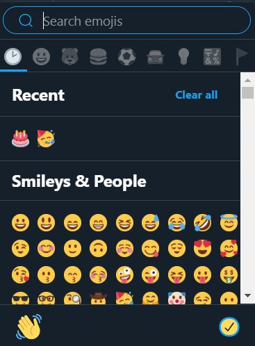
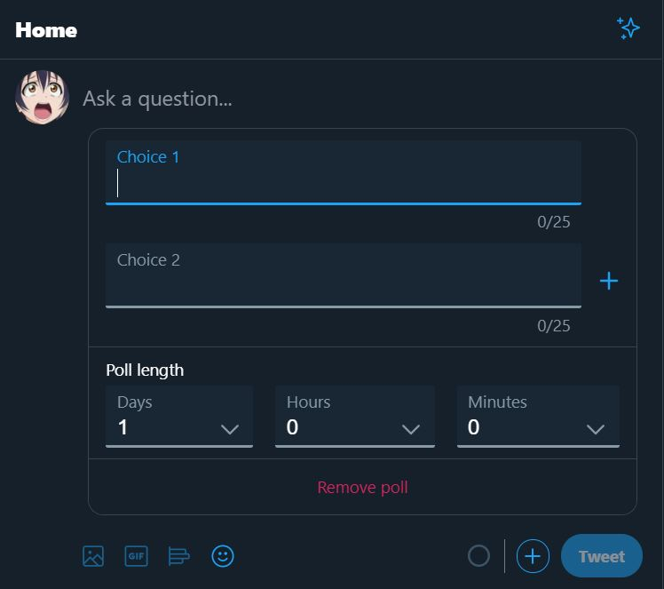
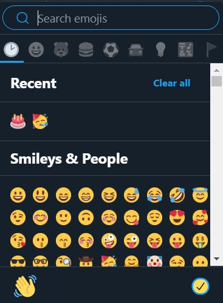
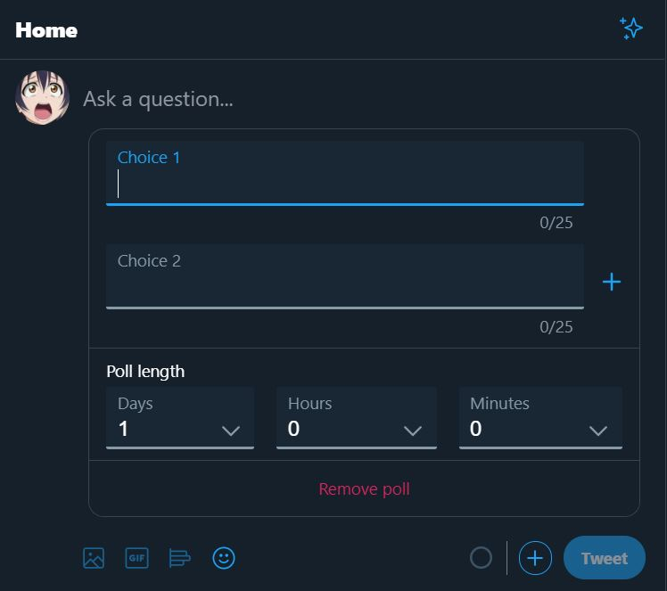

Results

Browsing
Any user who uses Twitter knows that they must start their browsing experience on the Twitter homepage, which provides a platform for them to post content, and catch up on the most current news and posts relevant to them. The homepage is also a place for companies to put advertisements on Twitter, which is an important aspect of Twitter’s business and an important part of the user experience for generic Twitter users.

The homepage of Twitter contains all of the posts from the accounts that the user has followed, or that their followers have retweeted or liked. The design of the homepage is cleaner and more user friendly than Facebook's due to more "space" in layout, larger words for the sidebars and headings, and a cleaner looking design. These features allows for the user to find and see relevant content that they might be more willing to interact with, instead of generic posts or articles that have nothing to do with them at all. By focusing the design on relevant information, the user is more willing to spend more time browsing the site for information that may pertain to their interests. On the left hand side are the sidebars that hold the different tabs that lead to specific posts and information that the user could be interested in, or Twitter's direct messaging system.

If the user looks to the sidebar, they can see a tab with the word explore on it. The icon of the Explore tab is the hashtag (#), which is an iconic feature on Twitter used to link relevant articles and posts together. By clicking into the explore menu, Twitter allows users to choose from specific categories about what information the user is willing to see, and what information the Twitter algorithm thinks that the user would be more interested in clicking. In the image above, I clicked on the News that was trending in the United States, and most of the news on the website are very recent - within a day or two. The variety of news is also important. Tech related news like the Microsoft global outage are prevalent, but also political statements and news such as the US Senate Bill passing the bills on the Hong Kong Protestors. Unlike news articles and news channels, everything on Twitter is up to date and is in sync with what is happening at the very moment. A simple page refresh can bring about the newest updates that would have had to go through much editing and modifications before they reach TV channels and Newspapers. Most of the categories in Explore also come with images, which makes catching the user's attention much easier. With category titles of a few words and no descriptions, everything about the design in the Explore feature screams speed. By using words that capture the readers attention and immediately linking them to relevant articles, Twitter can better navigate the user to find relevant articles and post them.

Reacting
In comparison with Facebook, Twitter provides much less functions for reacting to specific posts or replies, which significantly limits this part of its applications. Sano-Franchini describes that Facebook allows “six emotions reactions: Like, Love, Haha, Wow, Sad, and Angry, as represented by six animated emoji” (19) compared to Twitter’s single “heart” option. With an abundance of emoji reactions, users on Facebook can more likely select the option that matches their emotional viewpoint on the post, while the same action on Twitter is severely limited by the dearth of options.


Commenting
Commenting on Twitter posts is similar to that of Facebook in that users can directly interact with the post and its replies by clicking in the text box that is provided and writing down whatever they are thinking. However, unlike Facebook, Twitter has limitations to the size of the comment; in the past, the limit of the number of characters on a single tweet is 140 characters. Twitter has changed it so that the maximum number of characters now is at 280 characters, which may seem like a lot, but is actually restraining when it comes to users trying to express their complete emotions. Thus, a lot of users resort to quick “soundbites” and utilize images and gifs to express their immediate reaction to a post.
Posting
Posting on Twitter is similar to that of Facebook, with a variety of options available to the user. At the top of the front page is a text box in which one can write their “tweet” and post it. The tweet can be embedded with text, images, polls, and gifs as seen below. The different buttons allows users to express their ideas and their opinions in various forms.

 


